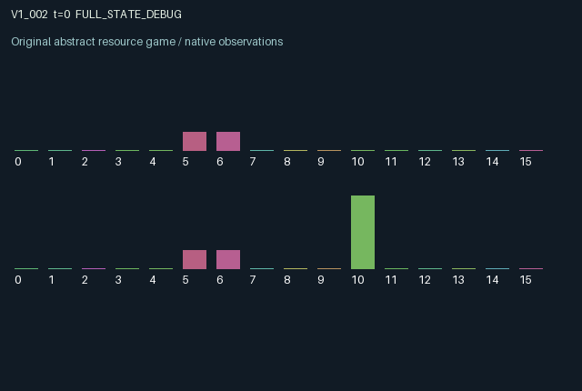

V1_002 / LEGACY_ARRAY
Window v1 · Manufacturing and persistent custom offers
Trade opportunities are produced by action, not supplied as fixed random meetings.
Release verification episode
Untrained uniform legal actions. Actual JAX state sampled along the full original episode; full-state debug camera. No human performance or learning claim.

Run this game
crucibles play --game v1_002
Start Python locally, then open the address printed by the terminal. Installation, multiplayer, takeover and keyboard controls →
Objective, rewards & ending
Exact task contract
{
"objective": "Manufacturing and persistent custom offers; accumulate original per-agent rewards under mechanism.md.",
"natural_termination": "Original t >= 32 horizon.",
"exact_transition_and_reward_source": "def raw_step(self, key, state, actions):\n # 0 wait; 1 manufacture; 2 post offer; 3 accept partner offer; 4 order a custom good.\n buy = (actions == 3) & (jnp.roll(state['offers'], 1) > 0) & (jnp.roll(state['goods'], 1) >= 1.0)\n sale = jnp.roll(buy, 1).astype(jnp.float32)\n manufacture = (actions == 1).astype(jnp.float32)\n custom = (actions == 4).astype(jnp.float32)\n bonus = buy.astype(jnp.float32) * state['orders']\n goods = jnp.clip(state['goods'] - sale + manufacture * (0.5 + state['tools']), 0.0, 3.0)\n offers = jnp.where((actions == 2) & (goods >= 1.0), 1.0, jnp.maximum(0.0, state['offers'] - 0.34 - sale))\n rewards = jnp.tanh(0.35 * buy + 0.2 * sale + 0.5 * bonus - 0.16 * manufacture - 0.08 * custom).astype(jnp.float32)\n next_state = {'t': state['t'] + jnp.array(1, jnp.int32), 'goods': goods,\n 'offers': offers.astype(jnp.float32),\n 'tools': jnp.clip(0.96 * state['tools'] + 0.18 * buy + 0.05 * jnp.roll(custom, 1), 0.0, 1.0),\n 'orders': jnp.clip(0.9 * state['orders'] * (1.0 - buy) + custom, 0.0, 1.0),\n 'sales': sale}\n done_all = next_state['t'] >= 32\n dones = jnp.full((2,), done_all, dtype=jnp.bool_)\n info = {'done_all': done_all, 'legal_mask': self.legal_actions(next_state)}\n return self.observe(next_state), next_state, rewards, dones, info"
}Declared per-step reward bounds: -1.0 to 1.0. Observability: source_defined.
Rules
Original mechanism document (historical status wording retained)
Trade opportunities are produced by action, not supplied as fixed random meetings. Manufacturing creates stock at a rate determined by tools. An offer posted after manufacturing lasts across multiple transitions; a later partner acceptance consumes a unit from the seller, pays seller and buyer, and upgrades buyer tools. A buyer can first create a custom order, at cost, then later satisfy it via trade for an additional payoff. Partner custom orders also improve producer tooling. Simultaneous decisions accept only previously visible offers, preventing same-step retroactive opportunities. Stocks, offer lifetimes, tools and orders are bounded. tanh of finite buyer/seller gains, order completion and production/order costs is in [-1,1]. Both agents alter the other's inventory and future productive capacity. The mechanism is untested scientifically.
Commands
Roles & abilities
agent_0 Original window-v1 agent; abilities and private parameters follow the original mechanism and observe()
agent_1 Original window-v1 agent; abilities and private parameters follow the original mechanism and observe()
Observation permissions
Training receives only the original observation rows. Role cameras use declared visibility; debug cameras are explicitly marked. Local benchmark records log debug exposure and role takeover history.
Exact observation layout
[
{
"slice": [
0,
16
],
"visibility": "exact original observe() below",
"source_code": "def observe(self, state):\n obs = jnp.zeros((2, 16), dtype=jnp.float32)\n obs = obs.at[:, 0].set(state['t'] / 32.0)\n obs = obs.at[:, 1].set(state['goods'] / 3.0)\n obs = obs.at[:, 2].set(jnp.roll(state['goods'], 1) / 3.0)\n obs = obs.at[:, 3].set(state['offers'])\n obs = obs.at[:, 4].set(jnp.roll(state['offers'], 1))\n obs = obs.at[:, 5].set(state['tools'])\n obs = obs.at[:, 6].set(jnp.roll(state['tools'], 1))\n obs = obs.at[:, 7].set(state['orders'])\n obs = obs.at[:, 8].set(jnp.roll(state['orders'], 1))\n obs = obs.at[:, 9].set(state['sales'])\n obs = obs.at[:, 10].set(jnp.arange(2, dtype=jnp.float32))\n return obs"
}
]Entity visibility & attributes
[]
Actual verification & provenance
Per-game execution receipt
{
"game": "v1_002",
"status": "PASS",
"verification_revision": 2,
"source_sha256": "56d40320d815ebe56bd3f5514f7e7f76fe2e24be01a7342421db391c07c3b85e",
"seed": 20261101,
"runtime": {
"jax": "0.4.38",
"numpy": "1.26.4",
"devices": [
"TFRT_CPU_0"
]
},
"dimensions": {
"num_agents": 2,
"observation_size": 16,
"num_actions": 5,
"max_steps": 32
},
"checks": {
"eager_reset": {
"status": "PASS",
"seconds": 0.2427523136138916
},
"observation_spaces_legal_masks": {
"status": "PASS",
"seconds": 0.1862773895263672
},
"eager_step": {
"status": "PASS",
"seconds": 0.6901273727416992
},
"jit_reset": {
"status": "PASS",
"seconds": 0.10258746147155762
},
"jit_step": {
"status": "PASS",
"seconds": 0.15754032135009766
},
"eager_jit_integer_parity_float_measurement": {
"status": "PASS",
"seconds": 0.0011446475982666016
},
"jit_vmap_reset": {
"status": "PASS",
"seconds": 0.14981842041015625
},
"jit_vmap_step": {
"status": "PASS",
"seconds": 0.21085357666015625
},
"outer_autoreset_api": {
"status": "PASS",
"seconds": 0.2107102870941162
},
"full_original_horizon_episode_and_render": {
"status": "PASS",
"seconds": 1.2406010627746582
}
},
"human_scores": null,
"browser_controls": "PENDING",
"failures": [],
"elapsed_seconds": 3.701643228530884,
"float_parity_max_abs": 0.0,
"numerical_parity": "EXACT",
"raw_terminal_absorbing": "NOT_PART_OF_ORIGINAL_LEGACY_CONTRACT",
"terminal_outer_reset": "PASS",
"episode_steps": 32,
"scripted_random_returns": [
0.8215407133102417,
-0.1905938982963562
],
"terminal": true,
"demo_information": "FULL_STATE_DEBUG",
"demo_frames": 33,
"render_roles_checked": 2
}Chromium control verification
{
"game": "v1_002",
"status": "PASS",
"human_scores": null,
"engineering": true,
"checks": [
"catalog_selected_and_real_native_reset",
"dom_queue_and_native_step",
"second_participant_ownership_and_native_joint_step",
"all_roles_individually_controllable_no_role_cap",
"explicit_debug_camera",
"release_to_pure_ai_without_reset",
"close_session_preserves_log"
],
"ui_sha256": "314c83040b7b2bfaa517fa4b20c9861a6c37a1bc689a6e61179218685c1d47e3",
"keyboard": "NO_LEGAL_CARDINAL_COMMAND_FOR_ROLE0_AT_RESET",
"seconds": 3.664069890975952
}Original identity and file hashes
{
"id": "v1_002",
"key": "v1_002",
"title": "Window v1 · Manufacturing and persistent custom offers",
"summary": "Trade opportunities are produced by action, not supplied as fixed random meetings.",
"tags": [
"historical window-v1"
],
"family": "legacy_array",
"dimensions": {
"num_agents": 2,
"observation_size": 16,
"num_actions": 5,
"max_steps": 32
},
"source_sha256": "56d40320d815ebe56bd3f5514f7e7f76fe2e24be01a7342421db391c07c3b85e",
"manifest_sha256": "906266785caf96cf4b1df89345955d99608f88d43880955f5c9f55de54ff9a6e",
"files": [
{
"file": "candidate.py",
"bytes": 2759,
"sha256": "56d40320d815ebe56bd3f5514f7e7f76fe2e24be01a7342421db391c07c3b85e",
"origin": "work/exp_2/astra_generation/window_v1/candidate_00002/attempt_00/candidate.py"
},
{
"file": "mechanism.md",
"bytes": 856,
"sha256": "294d27cc48a15b93cfd59bdfc92e047adedddd0f0732fc6ae10f02e1871f635c",
"origin": "work/exp_2/astra_generation/window_v1/candidate_00002/attempt_00/mechanism.md"
}
],
"original_status": "EARLIER_WINDOW_V1_SOURCE",
"original_namespace": "astra_generation/window_v1",
"original_proposal_index": 2,
"original_saved_replay": false,
"release_validation": "PASS",
"human_scores": null,
"browser_validation": "PASS"
}